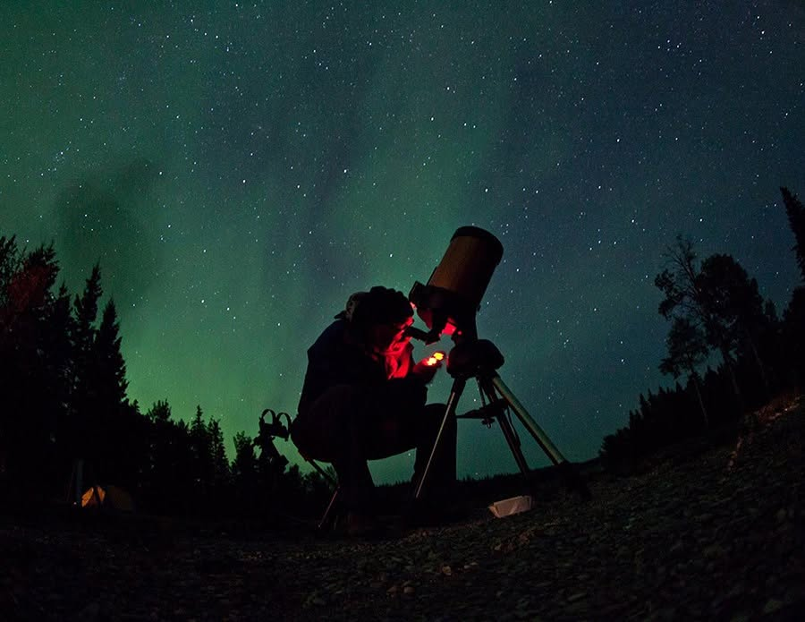

Thebacha Solar Model
A true-scale model of the solar system laid along the road out of Wood Buffalo National Park — anchored on the one object in the park already built to hold the whole sky.

Every diagram of the solar system is a lie
Wood Buffalo National Park is the largest Dark Sky Preserve on Earth, and its Dark Sky Circle — the open-air observation deck at Pine Lake — is where most visitors meet that fact for the first time. But the poster in the visitor centre does something quietly dishonest. To fit the planets onto one sheet, it has to compress the distances by orders of magnitude until they look like neighbours on a street. Visitors arrive believing the solar system is crowded.
It isn't. It is almost entirely empty, and emptiness is the hardest fact in astronomy to communicate, because every medium we normally use is optimised to remove exactly that. A page has edges. A screen has edges. Both punish dead space, so both delete the thing that matters most.
The park already owned the right apparatus and hadn't noticed: a circular wooden deck at one end of a sixty-kilometre road. A road has no edges to fit within. It can afford to be empty.
Make the deck the Sun, and the drive out to it stops being travel time. It becomes the model.
One measurement fixes everything
A scale model needs exactly one free parameter. Fix it, and every other number in the system is forced — you no longer get to choose anything. Here the free parameter was the deck itself, measured at 9.51 m across in Google Earth at 59°33′28″N, 112°15′32″W. Declaring that circle to be the Sun sets a ratio of 1 : 146,309,148, and every distance and diameter in the table below follows from it by arithmetic alone.
The ratio is what makes the model honest, and it is also what makes it uncomfortable. At this scale the four rocky planets are all inside the first 1.6 km. Jupiter is at 5.3 km. Neptune — the outermost planet — falls at 30.75 km, barely halfway to Fort Smith. The remaining thirty-one kilometres of highway are not part of the solar system at all. You leave it near the midpoint and drive the rest of the way home through interstellar space.
- Scale ratio
- 1 : 146 million1 mm on the model = 146,309 km in space
- The Sun
- 9.51 mMeasured diameter of the Dark Sky Circle deck
- Speed of light
- 7.4 km/hLight crosses this model at walking pace
- Edge of the planets
- 30.75 kmNeptune — then 31 km of nothing to town
The model on the ground
Each planet sits at its true modelled position on the real road. Pan and zoom; the spheres keep their true proportions to one another at every magnification.
Spheres are magnified for visibility but share one multiplier, so every size relationship in the set is preserved — Jupiter really is 29 times Mercury's diameter at any slider position. The dashed ring around each planet is a fixed-size locator, not the planet: where a planet is only a few pixels across inside its ring, that is the honest answer. Saturn's rings are drawn to the same scale, which is why its silhouette outreaches Jupiter's even though its body is smaller. Route traced from OpenStreetMap road centrelines; distances measured along the drivable route from the deck.
The corridor, to scale
Every marker sits at its true proportional distance from the deck.
Route geometry is schematic — distances along the corridor are exact, the drawn road alignment is stylised. The lower band magnifies the first 1.7 km, which on the upper band is compressed into a few millimetres. That compression is the same distortion the poster commits; here you can watch it happen.
Each marker carried the planet itself
The interpretive move that made the installation work was refusing to draw the planets. Every sign carried a physical sphere built to the same ratio as the Sun-deck — so the object in a visitor's hand and the deck kilometres down the road belonged to one consistent model. No cross-referencing, no legend, no "not to scale" disclaimer doing quiet damage in six-point type.
The ratio sets these sizes too, and they land in a range you can hold. Earth is an 8.7 cm ball, about a grapefruit. Mercury is 3.3 cm, a walnut. Jupiter is the outlier at 97.7 cm — just under a metre, and still shorter than the person standing next to it. The Sun is the deck under their feet, and it would take nearly ten Jupiters laid side by side to cross it.
The spheres, at one shared scale
Sun, planets and a 1.7 m human, all rendered at 1 : 146 million.
The rocky planets are shown at 8× magnification in the inset; at true scale on this figure Mercury would be under a pixel wide.
Full model specification
| Body | Distance (AU) | Position on route | Sphere diameter | Light travel time |
|---|
An exhibit you cannot scroll past
Science communication has largely conceded the terms of the attention economy. We are told the public has eight seconds, so we build for eight seconds: the hook, the infographic, the fact that fits in a caption. The trouble is that this format selects for a particular kind of knowledge — surprising, compressible, immediately legible — and filters out everything whose entire meaning is duration. Emptiness cannot be communicated quickly. That is what emptiness is.
This installation was built on the opposite premise. It takes roughly forty-five minutes to cross and there is no way to skim it, speed it up, or take it in at a glance. Its most important interval — the 3.8 km between Mars and Jupiter where nothing whatsoever happens, and then the 21 km between Saturn and Neptune where even less does — is, by the metrics of engagement, a catastrophe. It is also the entire lesson. The boredom is load-bearing.
There is a symmetry in siting that argument here. A dark sky preserve exists because darkness has become scarce and now has to be actively defended from encroaching light. Sustained attention is scarce in the same way and for related reasons. Wood Buffalo is one of the few places left where a person can have both undiminished, and an exhibit that spends a visitor's time this extravagantly is only possible somewhere that still has time to spend.
Fidelity and legibility are in tension, and most science communication resolves it by quietly sacrificing fidelity. Given sixty-odd kilometres of road, you can refuse the trade.
Who a northern installation is really for
The model was built alongside the Thebacha and Wood Buffalo Astronomical Society, and its public moment was the 6th annual Dark Sky Festival, August 17–21, 2017, hosted by TAWBAS with Parks Canada at Pine Lake. That partnership is not a credit line — it is the reason the thing has a social life. Interpretive hardware that no local organisation uses becomes roadside furniture within a season.
The corridor turns out to be institutionally as well as geometrically convenient. Its far end, the Parks Canada office and visitor theatre at 149 McDougal in Fort Smith, is where TAWBAS ran its festival planning meetings; its near end is the deck where the festival itself happened. The model was installed along the road the organisers were already driving.
Visitor-facing framing undersells what a permanent installation does in a small northern community. Fort Smith has a few thousand residents, and its students have the same statistical relationship to a career in the physical sciences that every remote community's students do — which is to say a poor one, and not for want of ability. What is usually missing is not aptitude but proximity: routine, unremarkable contact with the idea that measuring things carefully is something people around here do.
A scale model is unusually good at supplying that, because the model is not the interesting part — the derivation is. Every number in the table above comes from one measurement and one ratio. That is arithmetic a middle-school student can carry out completely, and having done it, they own the result in a way that being shown a poster never achieves. The installation is a worked example at landscape scale, sitting permanently on the road to the swimming lake, free, with no admission and no scheduled programming to miss.
The lesson is structural, not written
The installation carries almost no interpretive text, because the argument is made by the spacing rather than by the signs. Three properties of the layout do the teaching on their own, and each is a consequence of the ratio rather than a choice:
- The inner solar system is over before you have settled in. Mercury through Mars occupy 1.6 km — about a minute of driving. Visitors who approach the signs as a checklist run out of checklist almost immediately.
- The gaps grow faster than anyone expects. Mars to Jupiter is 3.8 km. Saturn to Uranus is 9.9 km. Uranus to Neptune is 11.1 km. The acceleration is the single most counter-intuitive fact about the solar system and here it is measured in odometer readings.
- Light is slower than the car. At this ratio light travels 7.4 km/h, so a vehicle at the posted highway speed is outrunning it roughly twelvefold. The four hours light needs to reach Neptune becomes four hours a person can weigh against their own afternoon.
Placing the Sun at Pine Lake rather than in town also means the model resolves at the destination instead of the trailhead. Visitors arrive at the deck having crossed the solar system inbound, and then spend the night standing on the surface of the Sun, looking out at the real one.
Honest limits of the model
- Distances are mean, not instantaneous. Positions use semi-major axes. A model showing the planets' true configuration on a given night would require moving every sign.
- The model is linear, the orbits are not. Laying the solar system along a road collapses a plane into a line; the signs encode distance from the Sun, not the planets' positions relative to one another.
- The corridor is longer than the model. Neptune falls at 30.75 km and the road runs 62.6 km. Half the drive lies beyond the planets — an artefact of anchoring on the deck rather than on the far endpoint, and arguably the most instructive thing about the layout.
- Pluto is shown for reference only. At 39.48 AU it would fall at 40.37 km, inside the corridor but well past Neptune.
- Marker positions are reconstructed, not surveyed. The signs stood at the roadside, so positions on the interactive map are interpolated along the drivable route — highway and Pine Lake access road, excluding campground loops — at each planet's modelled distance from the deck. They show where the model puts each planet, not a record of where each post was set.
- Strip-map geometry is schematic. Corridor distances are accurate; the drawn road alignment in Figure 2 is stylised for legibility and is not for navigation. Deck coordinates are approximate to about 100 m, and the Fort Smith endpoint is an estimate of the office location.